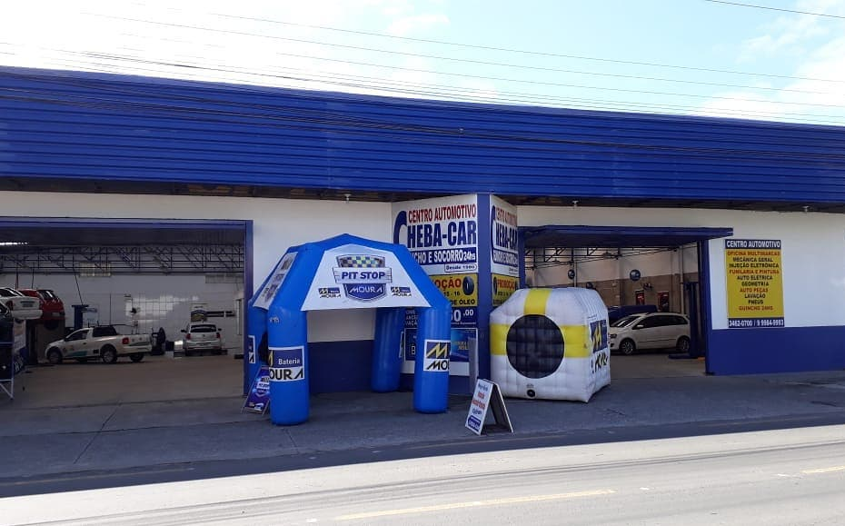

A EMPRESA
Quando a CHEBA-CAR iniciou, em 1980, nós almejávamos o melhor atendimento para a cidade de Criciúma, oferecendo a nossos clientes qualidade, eficiência, rapidez e tecnologia avançada. Iniciamos com uma pequena oficina e minúsculo departamento de auto-peças, estrutura de funcionários também pequena. Há mais de 30 anos, estamos nos realizando ao longo da estrada, e hoje crescemos conforme exige o tempo. Agradecemos você pela confiança que à nós foi depositada possibilitando assim a empresa que somos hoje. A CHEBA-CAR, chega no limiar deste milênio orgulhosa em poder prestar importantes serviços a seus clientes. Hoje possuímos oficina mecânica, loja auto-peças, funilaria, pintura, elétrica, injeção eletrônica, serviços de táxi e guincho 24 horas. Com a estrutura que a CHEBA-CAR possui atualmente, queremos prosseguir nossa jornada aprimorando cada vez mais nossos profissionais e empresa que possamos continuar satisfazendo nossos clientes no presente e no futuro. CHEBA-CAR uma empresa sólida e de confiança. Trabalhamos sempre esperando pela satisfação do Cliente que é nosso melhor retorno. Amamos o que fazemos, assim somos felizes, e fizemos bem feito!
 @Cheba-Car - Instagram
@Cheba-Car - Instagram +55 (48) 9 99041105
+55 (48) 9 99041105 chebacar@terra.com.br
chebacar@terra.com.br